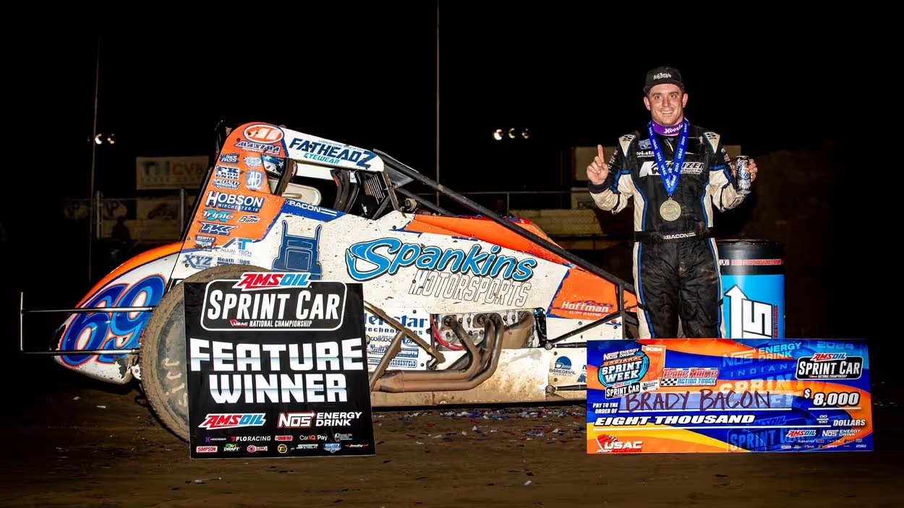

Brady Bacon to Run Full-Time High Limit Schedule With Vermeer Motorsports in 2027
Team owner Tony Vermeer named Bacon the full-time driver of the No. 55 on Oct. 22 after Bacon ran the final 10 races of 2026 in the car. It will be his first full-time national tour in a winged 410 sprint car.

Brady Bacon will drive the Vermeer Motorsports No. 55 for the full Interstate Batteries High Limit Racing schedule in 2027, team owner Tony Vermeer announced on Oct. 22. Bacon drove the car in the final 10 races of the 2026 season. The 2027 season will be his first full-time national tour in a winged 410 sprint car, according to the announcement, which was published by SPEED SPORT and DirtRacing.com.
“After a lengthy meeting, we’ve decided to name Brady Bacon as our driver for 2027. It’s pretty clear that he has the same mentality, the same passion, the same focus, and the same drive as Tye [Wolfgang] and myself…a ‘whatever it takes’ attitude,” Vermeer said. Crew chief Tye Wolfgang said Bacon’s “experience and accomplishments speak for themselves.”
Bacon, 36, of Broken Arrow, Oklahoma, has won four USAC AMSOIL National Sprint Car championships and 64 series features, both second all-time in USAC history, according to the announcement. He raced the ASCS National Tour full time from 2010 to 2012 and won 12 times in that span, and he has two World of Outlaws wins. His busiest national touring season in a winged 410 was 2025, when he ran 17 of 48 High Limit events, which leaves him eligible for the 2027 Rayce Rudeen Foundation Rookie of the Year award.
During the 10-race trial, Bacon and the No. 55 earned a podium finish at Lakeside Speedway and a top-five at Eldora Speedway, according to the announcement. Racing News reported that Bacon ran 13 High Limit events in 2026 with four top-five finishes, and FloRacing reported eight top-10s in those 13 starts. “Our goal is to build on that, win races, and ultimately, contend for a championship,” Bacon said. He also thanked CD Racing and TKH Motorsports for allowing him to pursue the full-time seat.